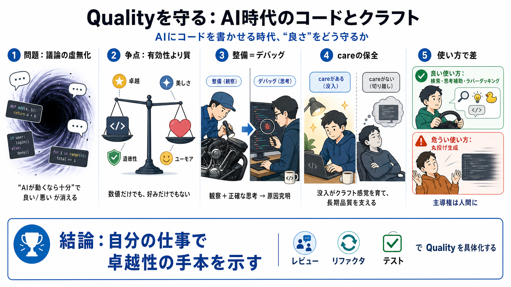

Pirsig Publishes Zen and the Art of Motorcycle Maintenance | Literature and Writing | Research Starters | EBSCO Research
# Pirsig Publishes Zen and the Art of Motorcycle Maintenance. "Zen and the Art of Motorcycle Maintenance," written by Ro…

AIにコードを書かせる時代に、失われがちな「良さ」をどう守るかを問う。
技術コミュニティの議論が「AIが動くなら十分」に吸い込まれると、“良い/悪い”の区別が消える。
性能や生産性ではなく、「卓越・美しさ・道徳性・ユーモア」を含むQualityの判断が取りこぼされていないかが争点だ。
『Zen and the Art of Motorcycle Maintenance』は、オートバイ整備を“観察と正確な思考＝原因究明（デバッグ）”に置き換える。
体験の手前で現実をふるい分ける“前概念的な価値判断”として働く。
AIへの違和感（嫌悪）は感情だけでなく「質への知覚」として理解できる。
行数や速度が増えても、それが人間の繁栄や喜びに本当に貢献する“質の判断”に基づいているかを問う。
コード対象への没入（care）が削られると、クラフトへの同一化が弱まり、長期の品質が揺らぐ。
共有された目的や誠実さが削られる不安の中で、自分の仕事で卓越性の模範を示すことが先だ。
AIの使い方次第では品質担保の具体策（レビュー、リファクタ、テスト戦略など）が必要になる。
※本デッキはユーザー提示文の要点圧縮です。原文の比喩（Maw）やQualityの位置づけは同文に基づき整理しています。
# Pirsig Publishes Zen and the Art of Motorcycle Maintenance. "Zen and the Art of Motorcycle Maintenance," written by Ro…
Quality vs. Vibe Coding. In Zen, Robert Pirsig became obsessed with “Quality” as a driving force. That spark you feel wh…
Robert Pirsig's Metaphysics of Quality (Zen & the Art of Motorcycle Maintenance). 18K views · 2 years ago. #philosophy #…
The book is more about Pirsig dealing with his existential angst than it is about the road trip itself. The backdrop is …
# What Zen And The Art Of Motorcycle Maintenance Can Teach Us About Web Design. Fred is soft skills and professional dev…